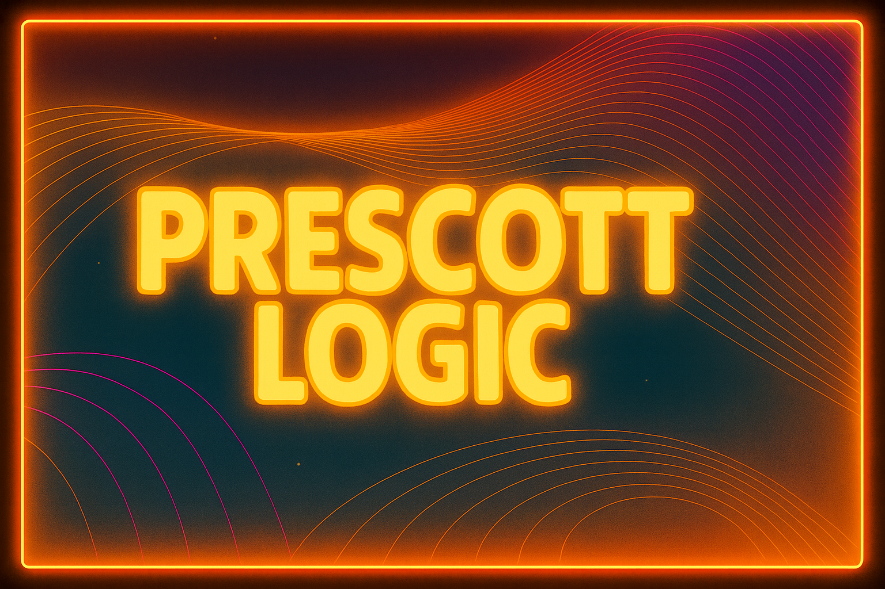

Workflow, decisions, and company operating systems
We build systems that turn planning, approvals, tasks, and business context into clearer execution. These tools are designed for people responsible for outcomes, not just casual app usage.
Prescott Logic builds operator-grade software and signal-driven systems that help people and organizations understand what is happening, decide what matters, and act with less friction.

Different products, same logic: better context, clearer decisions, more reliable action.
Prescott Logic has two main lanes. One helps operators run work, decisions, and business systems more clearly. The other applies the same practical intelligence approach to machine health and signal-driven monitoring.
We build systems that turn planning, approvals, tasks, and business context into clearer execution. These tools are designed for people responsible for outcomes, not just casual app usage.
We build systems that capture real-world signals, establish baselines, detect anomalies, and turn those signals into actionable operational insight.
Prescott Logic products stand on their own, but they share a common operating logic: observe, structure, interpret, decide, act.
The internal operator platform for running the company, coordinating workflows, and proving the operating model in practice.
Internal systemA product-first expression of the operator software thesis: clearer business execution for founder-led work.
By Prescott LogicThe appliance-first wedge into a broader machine-health platform: retrofit sensing, baselines, anomaly detection, and actionable interpretation.
By Prescott LogicThe company is practical about AI. We are more interested in trusted systems, repeatable workflows, and compounding context than in theatrical demos.
The strongest systems get better with history, labels, baselines, and repeated use. We prefer compounding context to novelty.
We build for people responsible for outcomes. That keeps the work grounded in real decisions and real operational pressure.
Better models should strengthen the system, not define the whole business. Real workflows and real-world signals matter more than wrapper language.
Founded in Oakland, California, Prescott Logic is building a portfolio of operator-grade systems that help people and organizations work with more clarity and less friction.
Prescott Logic builds practical intelligence systems that help people and organizations operate with more clarity, better decisions, and less friction.
Practical over theatrical. Context over hype. Systems over demos.